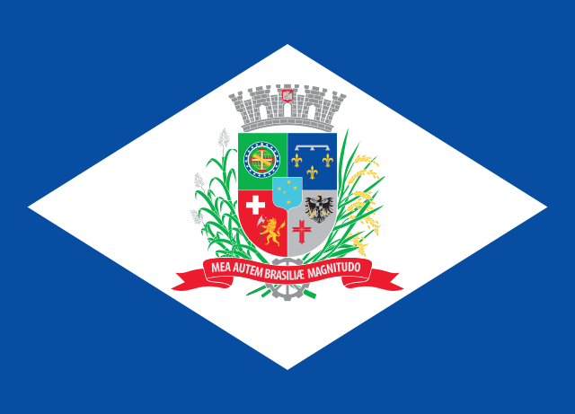
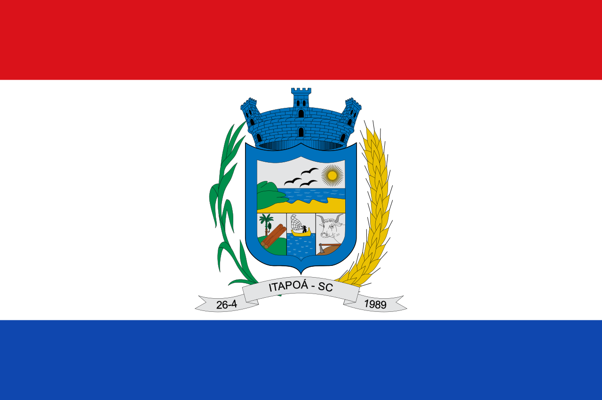
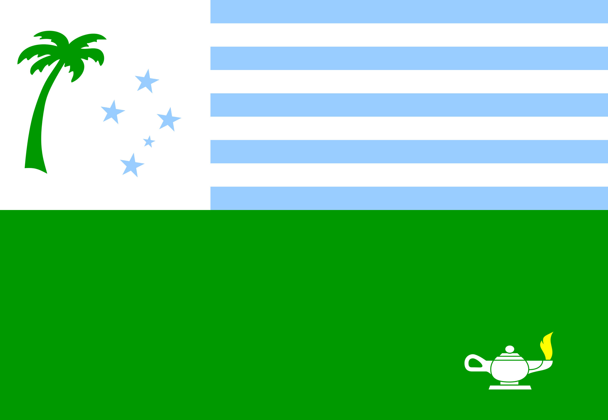

Estado:

Cidades:

Joinville é um município localizado na região norte do estado de Santa
Catarina. Sua população, conforme estimativas do IBGE de 2021, era de 604
708
habitantes, sendo a maior cidade do estado, à frente da capital
Florianópolis, e é a terceira mais populosa cidade da Região Sul do Brasil
atrás apenas de Porto Alegre e Curitiba (da qual é distante apenas 130
quilômetros, sendo assim,
mais próxima da capital paranaense do que a do próprio estado). Possui uma
área de 1 127,946 quilômetros quadrados. Pertence à Microrregião de
Joinville e à Mesorregião do Norte Catarinense e é sede da Região
Metropolitana do
Norte/Nordeste Catarinense, a qual contava, no último censo,
aproximadamente 1,34 milhão de habitantes, assim sendo, a mais populosa
região metropolitana do estado de Santa Catarina.
O prefeito de Joinville se chama Adriano Bornschein Silva.

Itapoá é uma cidade de Estado do Santa Catarina. Os habitantes se chamam
itapoaenses. O município se estende por 255,8 km² e contava com 20 576
habitantes
no último censo. A densidade demográfica é de 80,5 habitantes por km² no
território do município. Vizinho dos municípios de São Francisco do Sul,
Garuva e Guaratuba,Itapoá se situa a 14 km a Norte-Leste de São Francisco
do Sul
a maior cidade nos arredores. Situado a 12 metros de altitude, de Itapoá
tem as seguintes coordenadas geográficas: Latitude: 26° 7' 3'' Sul,
Longitude: 48° 37' 0'' Oeste. Itapoá é o lar do Parque Natural Municipal
Carijós.
O prefeito de Itapoá se chama Marlon Roberto Neuber.
Estado:

Cidade:

Palmeira é um município brasileiro do estado do Paraná. Localiza-se na
Microrregião de Ponta Grossa, estando a uma altitude de 865 metros. Possui
uma área de 1465,1 km² e sua população,
conforme estimativas do IBGE de 2021, era de 34 109 habitantes. Foi neste
município que se situou a célebre Colônia Cecília.
O prefeito de Palmeira se chama Sérgio Luis Belich.
Início